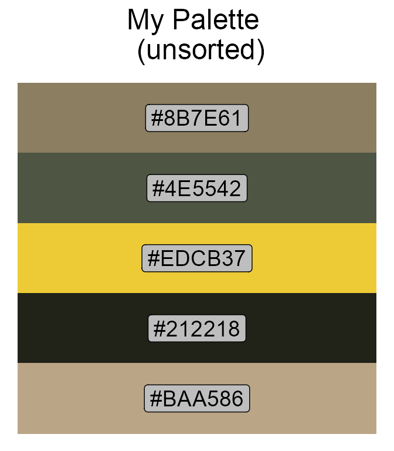
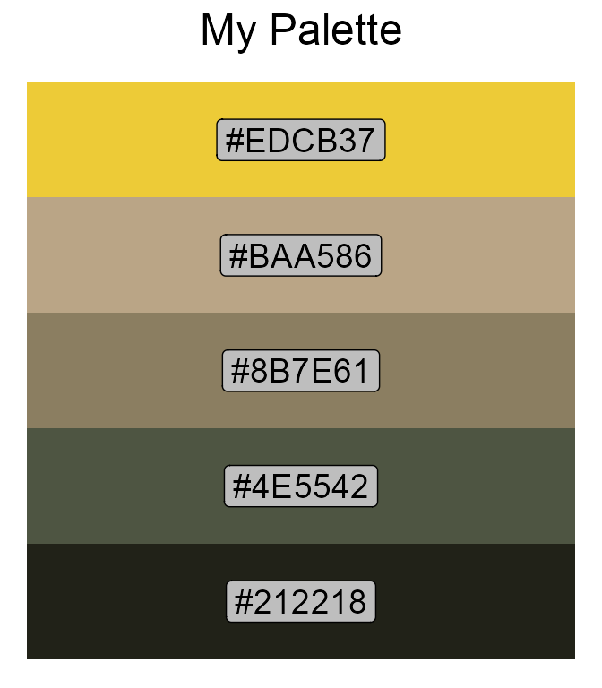

This vignette shows you some examples of using the package’s main function, create_pal. You will learn how to make good use of its functionality to create your own awesome palette.
We will play around with the create_pal function using the image below (photo credit: Gen-Chang Hsu). This stonecrop species (Sedum morrisonense Hayata) is endemic to Taiwan and commonly seen at mid- and high-altitudes. It thrives in the rock cracks and crevices, growing low and spreading out to avoid strong wind. It is also characterized by its densely-clumped, fingernail-like succulent leaves, which are used for water storage in addition to photosynthesis. During summertime, blossoms of bright yellow flowers will burst into bloom.

Now let’s start with a simple example:
# Get the path of the image
library(PalCreatoR)
image_path <- system.file("Alpine Flower.JPG", package = "PalCreatoR")
# Create a basic palette with 5 colors
My_pal_5 <- create_pal(image = image_path, n = 5, title = "My Palette (n = 5)")
print(My_pal_5)
#> [1] "#8B7E61" "#4E5542" "#EDCB37" "#212218" "#BAA586"More colors:
My_pal_10 <- create_pal(image = image_path, n = 10, title = "My Palette (n = 10)")
print(My_pal_10)
#> [1] "#A98149" "#777570" "#F1D135" "#3A3E29" "#CBBEA5" "#171811" "#4D5252"
#> [8] "#C4A56F" "#A89985" "#64772F"By default, the colors in the palette are not checked for colorblind safe. To get the colorblind-friendly colors, set colorblind = TRUE:
My_pal_clb <- create_pal(image = image_path, n = 5, colorblind = TRUE,
title = "My Palette \n (colorblind-friendly)")
print(My_pal_clb)
#> [1] "#8B7E60" "#435E6A" "#00D9FF" "#19252D" "#BCA681"-
sort = "hue": the colors are sorted by hue 1 in an ascending order (i.e., from red, yellow, green, to cyan, blue, and magenta); -
sort = "saturation": the colors are sorted by saturation 2 in a descending order (i.e., from pure to gray); -
sort = "value": the colors are sorted by value 3 in a descending order (i.e., from bright to dark).
Let’s visualize the effects of color sorting:
# Unsorted
My_pal_none <- create_pal(image = image_path, n = 5, sort = "none",
title = "My Palette \n (unsorted)")
# By hue
My_pal_hue <- create_pal(image = image_path, n = 5, sort = "hue",
title = "My Palette \n (sorted by hue)")
# By saturation
My_pal_saturation <- create_pal(image = image_path, n = 5, sort = "saturation",
title = "My Palette \n (sorted by saturation)")
# By value
My_pal_value <- create_pal(image = image_path, n = 5, sort = "value",
title = "My Palette \n (sorted by value)")
Another novel feature in the create_pal function is that you can specify method = "Gaussian_mix" to apply multivariate Gaussian mixture modeling (GMM) instead of the default kmeans algorithm to extract the representative colors from the image:
# kmeans
My_pal_kmeans <- create_pal(image = image_path, n = 5, method = "kmeans",
sort = "value", title = "My Palette \n (kmeans)")
# Gaussian mixture modeling
My_pal_Gaussian_mix <- create_pal(image = image_path, n = 5,
method = "Gaussian_mix", sort = "value", title = "My Palette \n (GMM)")Not much difference in this case.
Finally, if you do not want to see your palette, set show.pal = FALSE. This will return only the color code vector.
Let’s use the palettes in the figure:
library(ggplot2)
library(ggpubr)
# Create the palettes
My_pal1 <- create_pal(image = image_path, n = 10, sort = "value", colorblind = FALSE, show.pal = F)
My_pal2 <- create_pal(image = image_path, n = 10, sort = "value", colorblind = TRUE, show.pal = F)
# The golden spiral
spiral_df <- data.frame(x = seq(0, 13, length.out = 5000)) %>%
mutate(y = exp(0.30635*x)) %>%
mutate(x = rev(x),
y = rev(y),
polar_x = y*cos(x),
polar_y = y*sin(x),
x_start = rep(0, 5000),
y_start = rep(0, 5000))
# Plot the spirals (package logo)
spiral_p1 <- ggplot(spiral_df) +
geom_segment(aes(x = x_start, y = y_start, xend = polar_x, yend = polar_y),
color = rep(My_pal1, each = 500),
size = 1) +
geom_point(aes(x = polar_x, y = polar_y),
color = "black",
size = 0.1) +
coord_fixed(ratio = 1) +
theme_void()
spiral_p2 <- ggplot(spiral_df) +
geom_segment(aes(x = x_start, y = y_start, xend = polar_x, yend = polar_y),
color = rep(My_pal2, each = 500),
size = 1) +
geom_point(aes(x = polar_x, y = polar_y),
color = "black",
size = 0.1) +
coord_fixed(ratio = 1) +
theme_void()
# Arrange the spirals
ggarrange(spiral_p1, spiral_p2)
# Dazzling effect
spiral_p1_dazzle <- ggplot(spiral_df) +
geom_segment(aes(x = x_start, y = y_start, xend = polar_x, yend = polar_y),
color = rep(My_pal1, 500),
size = 1) +
geom_point(aes(x = polar_x, y = polar_y),
color = "black",
size = 0.1) +
coord_fixed(ratio = 1) +
theme_void()
spiral_p2_dazzle <- ggplot(spiral_df) +
geom_segment(aes(x = x_start, y = y_start, xend = polar_x, yend = polar_y),
color = rep(My_pal2, 500),
size = 1) +
geom_point(aes(x = polar_x, y = polar_y),
color = "black",
size = 0.1) +
coord_fixed(ratio = 1) +
theme_void()
# Arrange the spirals
ggarrange(spiral_p1_dazzle, spiral_p2_dazzle)
# Color gradients
My_pal3 <- create_pal(image = image_path, n = 5000, sort = "value", colorblind = FALSE, show.pal = F)
# This might take a while to run
spiral_p3 <- ggplot(spiral_df) +
geom_segment(aes(x = x_start, y = y_start, xend = polar_x, yend = polar_y),
color = rep(My_pal3),
size = 1) +
geom_point(aes(x = polar_x, y = polar_y),
color = "black",
size = 0.1) +
coord_fixed(ratio = 1) +
theme_void()
spiral_p3Interested? Grab your own image and try it out now!
Have fun and enjoy!!!
Hue represents the angle of the color (in degree) on the RGB color circle. A hue value of 0° gives red, 120° green, and 240° blue.↩︎
Saturation controls the amount of color used. A saturation value of 100% will be the purest color possible for the given hue; a saturation value of 0% results in grayscale color.↩︎
Value indicates the brightness of the color. A value of 100% has no black mixed into the color; a value of 0% gives pure black.↩︎